01 · Triangles · ★
The first three
Your original thought. Three distinct, open circles; one above two. The closest
starting point to the marimo family.
Icon SVG ↓ ·
Wordmark SVG ↓
02 · Triangles
A little closer
The same three, leaning into each other. A compact silhouette with a small
triangular breathing space.
Icon SVG ↓
03 · Triangles
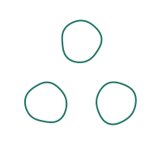
Room to grow
Air between three very light loops. Quiet and spare, with room for each
individual.
Icon SVG ↓
04 · Triangles
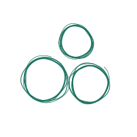
Off balance
An asymmetric stack: one smaller ball sits just off center. Less diagram, more
found arrangement.
Icon SVG ↓
05 · Triangles
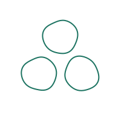
One breath
Three uninterrupted pen loops. The simplest translation of the idea into a
small, legible mark.
Icon SVG ↓
06 · Triangles
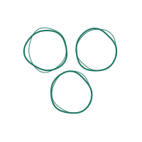
Upside down
Two above one: a descending cluster that feels like a hanging sprig.
Icon SVG ↓
07 · Loops
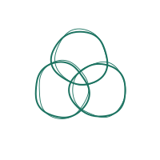
Shared edges
Three open loops overlap, suggesting a shared space without losing their own
boundaries.
Icon SVG ↓
08 · Loops
A small knot
Three elongated loops turn toward one center, halfway between mossballs and a
woven knot.
Icon SVG ↓
09 · Loops
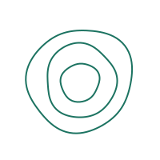
Pond ripples
A family of imperfect rings expands outward from one center. Many marimos,
expressed as layers.
Icon SVG ↓
10 · Loops
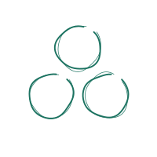
Loose thread
Long, wandering strokes nearly close into circles. More sketchbook, with the pen
lifts left visible.
Icon SVG ↓
11 · Loops
One orbit
Three small mossballs enclosed by a loose outer circle. A little ecosystem of
its own.
Icon SVG ↓
12 · Loops
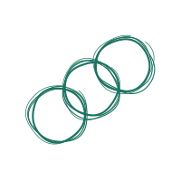
Linked together
Three loops in a loose diagonal chain. A subtle nod to connected notebooks.
Icon SVG ↓
13 · Moss
Soft stones
Three irregular solid shapes. The most direct silhouette, designed to hold
together at small sizes.
Icon SVG ↓
14 · Moss
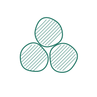
Pencil moss
Open contours with diagonal graphite-like strokes. A rough drawing of moss,
without literal leaves.
Icon SVG ↓
15 · Moss
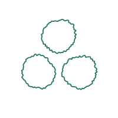
Velvet edges
Fine irregular contours suggest the fuzzy surface of a mossball. Organic, with a
clean interior.
Icon SVG ↓
16 · Moss
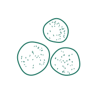
Living centers
Small scattered specks inside each mossball add texture without filling the
entire shape.
Icon SVG ↓
17 · Moss
One of many
A single solid ball among two open ones. A simple distinction: one active
notebook in a small group.
Icon SVG ↓
18 · Moss
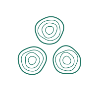
Moss prints
Three concentric, imperfect contours in each ball. A little like thumbprints or
the rings of a tree.
Icon SVG ↓
19 · Four
The little plot
Four open mossballs in a square, following your other arrangement. Order,
softened by hand.
Icon SVG ↓
20 · Colonies
A growing family
Five circles of different sizes nestle together. A more literal expression of
many marimos.
Icon SVG ↓
21 · Colonies
A small forest
Six mossballs form a low pyramid. A larger collective that still reads as a
single shape.
Icon SVG ↓
22 · Colonies
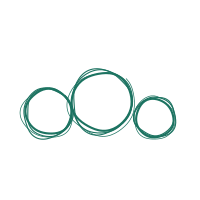
In company
Three different sizes on one baseline. Friendly and informal, like stones
collected beside a pond.
Icon SVG ↓
23 · Symbols
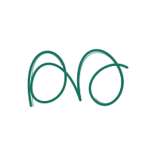
A hidden m
Two open loops share a rising stroke. A looser, more abstract monogram built
from the same circular language.
Icon SVG ↓
24 · Symbols
Clover study
A continuous three-lobed outline encloses one shared space. Three mossballs
become one organism.
Icon SVG ↓
25 · Four
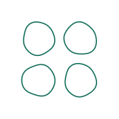
Loose square
Four single pen loops, with generous breathing room. The clearest version of
your two-by-two idea.
Icon SVG ↓
26 · Four
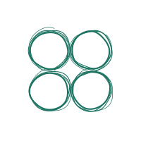
Huddled four
Four loose, layered circles almost touch. The small diamond of negative space
becomes part of the mark.
Icon SVG ↓
27 · Four
A little diamond
Turn the square through forty-five degrees. Four mossballs gather around an open
center.
Icon SVG ↓
28 · Four
Uneven ground
A gently irregular square: different sizes, slightly wandering centers. A little
colony rather than a rigid grid.
Icon SVG ↓
29 · Four
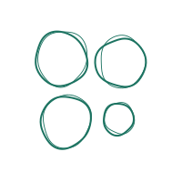
The newcomer
Three established mossballs with a smaller fourth tucked into the corner. A
family with room to grow.
Icon SVG ↓
30 · Four
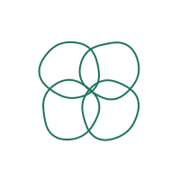
Four shared spaces
Four overlapping loops produce a small central window. A connected system, drawn
with a loose hand.
Icon SVG ↓
31 · Four
River stones
Four irregular solid shapes in an offset square. A compact, tactile silhouette
with generous gaps.
Icon SVG ↓
32 · Four
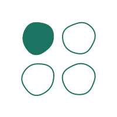
One awake
One solid circle and three open loops. An active notebook within a group of
four.
Icon SVG ↓
33 · Four
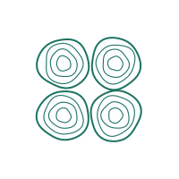
Four moss prints
Concentric rings turn each of the four circles into a small organic fingerprint.
Icon SVG ↓
34 · Four
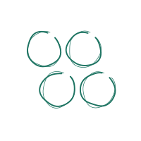
A drifting raft
Two staggered pairs shift sideways. The arrangement suggests movement while
keeping four distinct circles.
Icon SVG ↓
35 · Four
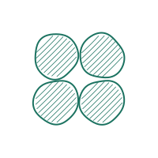
Pencil quartet
Four lightly hatched mossballs form a close square. A textured, sketchbook
interpretation.
Icon SVG ↓
36 · Four
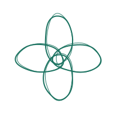
Four in bloom
Four elongated open loops turn around the same center. A more abstract botanical
direction.
Icon SVG ↓
37 · One different · ★
One filled
Three matching hand-drawn rings; the top-right mossball is solid. A clear,
compact accent.
Icon SVG ↓ ·
Wordmark SVG ↓
38 · One different
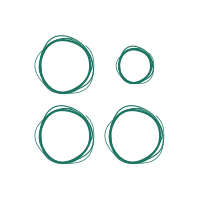
A smaller neighbor
Three matching rings and one smaller ring in the top-right corner.
Icon SVG ↓
39 · One different · ★
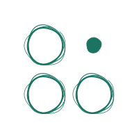
Room for one more
The top-right circle is reduced to a small solid seed. The other three stay
identical.
Icon SVG ↓ ·
Wordmark SVG ↓
40 · One different
A little louder
Only the top-right ring has a heavier stroke. The same shape, with a different
emphasis.
Icon SVG ↓
41 · One different
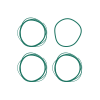
A quiet corner
Three layered rings and one delicate single outline in the top-right.
Icon SVG ↓
42 · One different
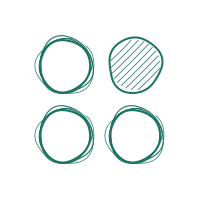
One pencil patch
Only the top-right mossball carries diagonal pencil hatching.
Icon SVG ↓
43 · One different
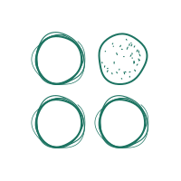
One living center
Only the top-right circle holds a scattering of moss-like speckles.
Icon SVG ↓
44 · One different · ★
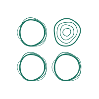
One fingerprint
Concentric rings distinguish the top-right mossball from three matching
outlines.
Icon SVG ↓ ·
Wordmark SVG ↓
45 · One different
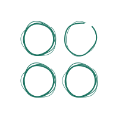
An open corner
One unfinished loop in the top-right; the other three keep their closed, layered
contours.
Icon SVG ↓
46 · One different · ★
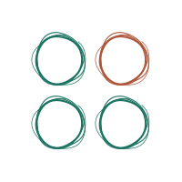
One warm note
A warm clay ring in the top-right adds a second ink to three matching rings.
Icon SVG ↓ ·
Wordmark SVG ↓
47 · One different
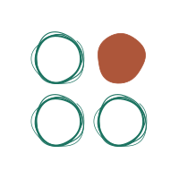
A warm seed
One solid clay mossball in the top-right; three matching open rings surround it.
Icon SVG ↓
48 · One different
A centered dot
All four rings match. A small solid dot marks just the top-right circle.
Icon SVG ↓
49 · One different
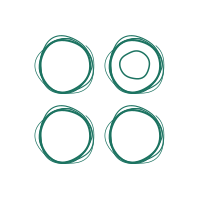
A second center
All four outer rings match. One extra inner ring distinguishes the top-right.
Icon SVG ↓
50 · One different
One soft edge
Only the top-right ring has a fuzzy moss-like edge. A subtle surface variation.
Icon SVG ↓
51 · One different
One left open
Three matching solid mossballs with one open ring in the top-right corner.
Icon SVG ↓
52 · One different · ★
One pale wash
Four matching outlines, with a translucent wash inside just the top-right
circle.
Icon SVG ↓ ·
Wordmark SVG ↓
53 · Mixed circles · ★
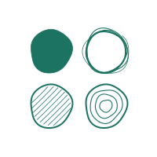
Four personalities
Solid, pencil-hatched, and concentric circles share a square with one loose
marimo-like ring. The top-right circle stays the same.
Icon SVG ↓ ·
Wordmark SVG ↓
54 · Mixed circles
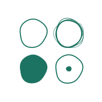
Quiet variety
A plain outline, a solid circle, and a dotted center surround the familiar
layered ring. The top-right circle stays the same.
Icon SVG ↓
55 · Mixed circles
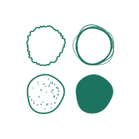
Moss collection
A fuzzy edge, scattered speckles, and a solid ball bring three different moss
textures together. The top-right circle stays the same.
Icon SVG ↓
56 · Mixed circles · ★
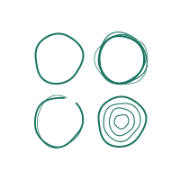
Pen samples
A single line, an open loop, and concentric contours contrast with the layered
marimo-like ring. The top-right circle stays the same.
Icon SVG ↓ ·
Wordmark SVG ↓
57 · Mixed circles
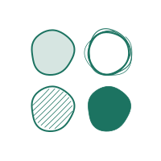
Three surfaces
A pale wash, diagonal hatching, and a solid fill make three surfaces beside the
open layered ring. The top-right circle stays the same.
Icon SVG ↓
58 · Mixed circles
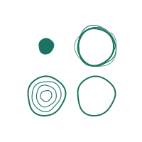
Little seed family
A small solid seed, a fingerprint, and a plain loop sit beside the familiar
marimo-like ring. The top-right circle stays the same.
Icon SVG ↓
59 · Mixed circles
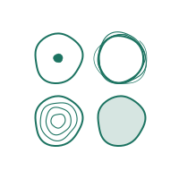
Different centers
A centered dot, concentric rings, and a pale wash vary the interiors around one
layered ring. The top-right circle stays the same.
Icon SVG ↓
60 · Mixed circles
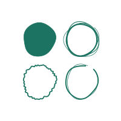
Collected marks
A solid ball, a fuzzy outline, and an unfinished loop make a varied but
monochrome collection. The top-right circle stays the same.
Icon SVG ↓
61 · Mixed circles
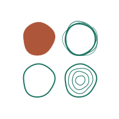
Warm company
A clay solid ball, a fine single loop, and concentric rings accompany one green
marimo-like ring. The top-right circle stays the same.
Icon SVG ↓
62 · Mixed circles
Soft and spare
A washed circle, a solid circle, and a plain outline keep the differences
simple. The top-right circle stays the same.
Icon SVG ↓
63 · Mixed circles
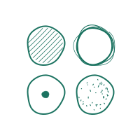
Field notes
Pencil hatching, a dotted center, and scattered moss speckles form a more
detailed drawing study. The top-right circle stays the same.
Icon SVG ↓
64 · Mixed circles
A growing collection
A small solid seed, a pale wash, and a fuzzy ring make a softer, organic set.
The top-right circle stays the same.
Icon SVG ↓